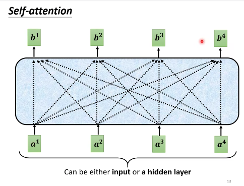
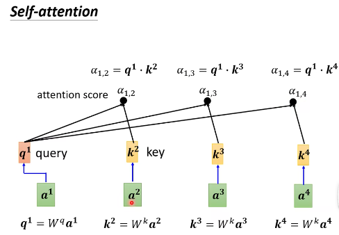
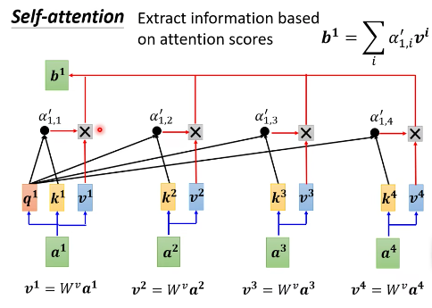
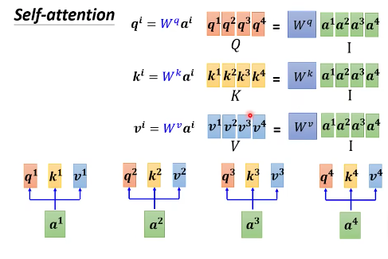
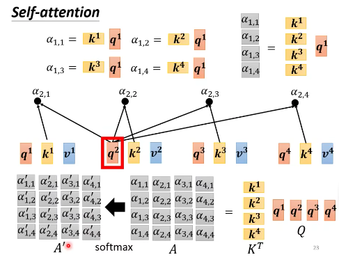
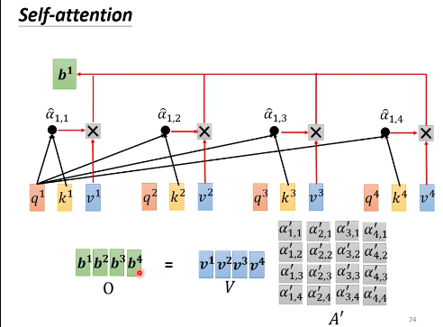
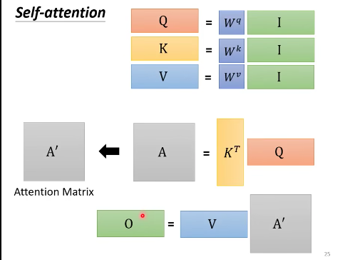
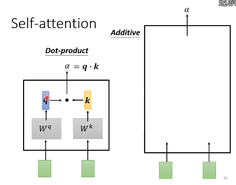

2023-02-09 如何理解自注意力机制
目录
理解输入与输出
- 输入有可能是一个 vector，有可能是多个 vector
- 输出：
- 一个序列对应一个 label。the whole sequence has a label
- 例子：在情感分析里面，This is good 对应的输入是多个 vector，输出为 positive，是一个vector。
- 一个 vector 对应一个 label。一个序列对应多个 label。
- 例子：在词性标注里面，This is good 对应的输入是多个 vector，输出为 代词，动词，形容词。
- 模型决定 label 的个数。seq2seq 任务
- 例子：在机器翻译里面，This is good 对应的输入是3个 vector，中文翻译是”不错“，输出为2个 vector。
- 一个序列对应一个 label。the whole sequence has a label
一个vector对应一个label的情况，即输入和输出一样多，也叫做sequence labeling
- 例子： I saw a saw
- 如何解决 sequence labeling 的问题：用 fully connected network 对每一个 input vector 进行作用
- 弊端：
- 用 fully connected network 来输出，假设对 I saw a saw 做词性标注。对于 FC 层来说，两个 saw没有什么不同，但是他们实际上一个是动词，一个是名词。
- 解决思路：考虑更多的上下文。每一个 fc 层，都对所有的输入作用。或者给他一个 window，作用于相邻的几个 input vector。但是作用还是有限，计算也很复杂。
我们想考虑整个 sequence，但是不想把 sequence 所有的数据都包括在里面，就有了 self-attention。
Self-attention
如果要考虑上下文的信息，输入可以扔进 self-attention 之后，生成 vector with context，然后丢进FC层，然后再过一次 self-attention，然后再丢进 FC 层。
可以这样理解，self-attention 获得上下文信息，FC 层专注于局部信息，交替使用。
运作原理：
- 输入：是一串 vector，可以是整个 network 的输入，也可以是 FC 层的输出，这里用 $a$ 表示。
- 输出：一串 vector，这里用 $b$ 表示。每一个 $b$ 都对所有 $a$ 作用。（这个图乍一看很像上面的 FC，但其实不一样）

问题就变成了，输入是 $a$ 时，如何计算 $b$？用 $b^1$来说明，具体分三步。
- 如何产生 $b^1$ 这个向量：
-
第一步：找出 sequence 里面跟 $a^1$ 相关的其他向量。（FC 层会把 sequence 所有的向量都包括进来，这里只包括相关的向量，这就是不同点。）这个机制叫做自注意机制。
- 每一个向量跟 $a^1$ 相关联的程度，我们用数值 $\alpha$ 来表示。
- Self-attention 的 module 怎么决定两个向量的关联性呢？
- 内积：dot product （方法原理在文章最后面）
- 相加：additive（方法原理在文章最后面）
- 这里的做法是：分别计算 $a^1$ 与 $a^2$， $a^3$，$a^4$ 的关联性
- 把 $a^1$ 乘以 $W^q$，得到 $q^1$ ，$q^1$ 就是 query——搜寻。
- 把 $a^2$ 乘以 $W^k$，得到 $k^2$，$k^2$ 就是 key——键。把 $a^3$ 乘以 $W^k$，得到 $k^3$，把 $a^4$ 乘以 $W^k$，得到 $k^4$。
- 那么 $\alpha_{1,2} =q^1\cdot k^2$，关联性就算出来了。$\alpha_{1,2}$ 也叫 attention score。
- 同理可以算出 $\alpha_{1,3}，$$\alpha_{1,4}$。
- 一般我们也会算 $q^1$ 和 $k^1$ 的关联性，也就是 $\alpha_{1,1}$。

-
第二步：对 $\alpha_{1,1}$，$\alpha_{1,2}$，$\alpha_{1,3}$，$\alpha_{1,4}$进行Softmax 操作，得到$\alpha^\prime$。
- 为什么要用 Softmax：Softmax 最常见，这里也可以用其他函数，可以用 relu 等。
-
第三步：根据$\alpha^\prime$，在 sequence 里面抽取重要的信息。
- 做法：将 $a^1$，$a^2$，$a^3$，$a^4$ 分别乘以 $W^v$，得到 $v^1，$$v^2，$$v^3$，$v^4$。 （其实这里$v^1，v^2，v^3，v^4$就是$a^1，a^2，a^3，a^4$自己本身的等价表示）
- 将 $v^1$ 到 $v^4$ 都乘以分别的 $\alpha^\prime$， 然后再相加。
$$ b^1 = \sum_i \alpha\prime_{1,i} v^i $$
-
如果 $a^1$ 和 $a^2$ 的关联性很强，$\alpha^\prime_{1,2}$ 的值很大，那么经过 weighted sum 得到的 $b^1$ 的值就可能会接近 $v^2$。
也就是说，谁的 attention score 越大，谁的 v 就会 dominate 抽出来的结果。

-
$QKV$（从矩阵的角度看self-attention）
- 把 $a^1$ 到 $a^4$ 看成是矩阵 $I$ 的列，$q^1$ 到 $q^4$ 是矩阵 $Q$ 的列，那么可以转化成矩阵间的运算。
矩阵$I$乘以$Wq$，得到矩阵$Q$，$Q$的4列就是$q^1$到$q^4$。
同样，输入矩阵I乘以$W^k$，得到矩阵$K$，$K$的4列就是$k^1$到$k^4$。
输入$I$乘上三个不同的矩阵，就得到了$QKV$。

-
每一个 $q$ 会和每一个 $k$ 计算内积，得到 attention score。
-
矩阵和向量相乘：
- 矩阵 $K$ 和 $q^1$ 内积，得到 $a^1$ 和其他输入的相关性。
- 矩阵 $K$ 和 $q^2$ 内积，得到 $a^2$ 和其他输入的相关性。
- 合起来，就是
$$ \begin{array}{cc}
\alpha_{1,1} & \alpha_{2,1} & \alpha_{3,1} & \alpha_{4,1} \ \alpha_{1,2} & \alpha_{2,2} & \alpha_{3,2} & \alpha_{4,2} \ \alpha_{1,3} & \alpha_{2,3} & \alpha_{3,3} & \alpha_{4,3}\ \alpha_{1,4} & \alpha_{2,4} & \alpha_{3,4} & \alpha_{4,4} \end{array} =\begin{array}{cc} k^1 \ k^2 \ k^3 \ k^4 \
\end{array}\begin{array}{cc} q^1 & q^2 & q^3 & q^4 & \end{array} $$
简写为
$$ A = K^T \cdot Q $$

-
-
对 $A$ 做Softmax，得到 $A^\prime$
-
$V$乘以$A^\prime$得到B
- $v^1$乘上 $\alpha^\prime_{1,1}$， 加上$v^2$乘上 $\alpha^\prime_{1,2}$，等等，得到 $b^1$
- $v^1$乘上 $\alpha^\prime_{1,1}$， 加上$v^2$乘上 $\alpha^\prime_{1,2}$，等等，得到 $b^2$
- O 就是 Output

总结：先产生QKV，根据Q找出相关的位置，再对V做weighted sum。

怎么得到$W^q$、$W^k$和$W^v$
初始化一个矩阵，通过training data 在训练过程中更新。
自注意模块计算两个向量的关联性
内积方法
左边的向量乘以 $W^q$ 矩阵，右边的向量乘以 $W^k$ 矩阵，得到 $q$ 和 $k$ 这两个向量。然后做内积，得到一个标量。
$$ \alpha = q \cdot k $$
相加方法
左边的向量乘以 $W^q$ 矩阵，右边的向量乘以 $W^k$ 矩阵，得到 $q$ 和 $k$ 这两个向量。然后相加丢到tanh，再乘以 $W$，得到 $\alpha$。

参考：
李宏毅老师的讲课视频